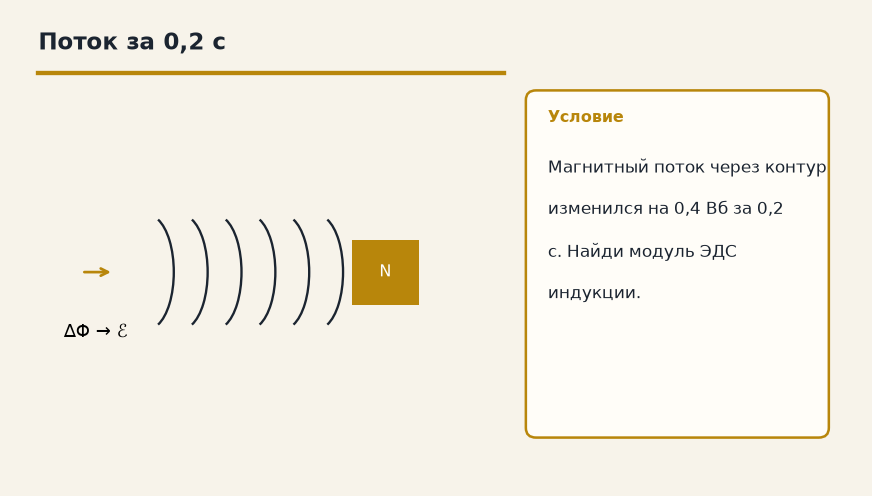
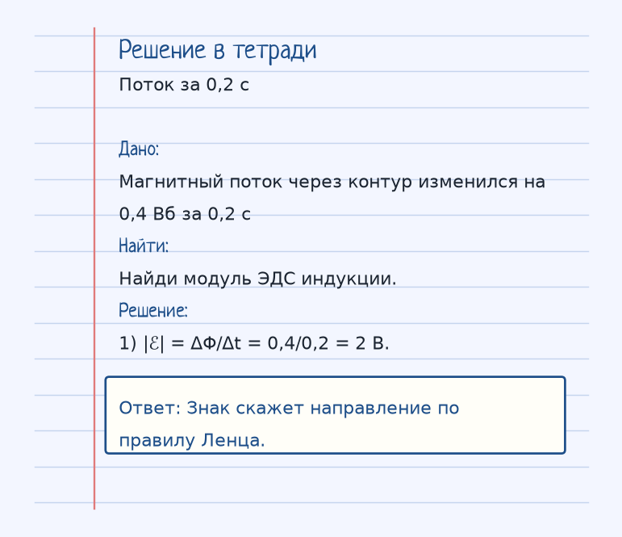
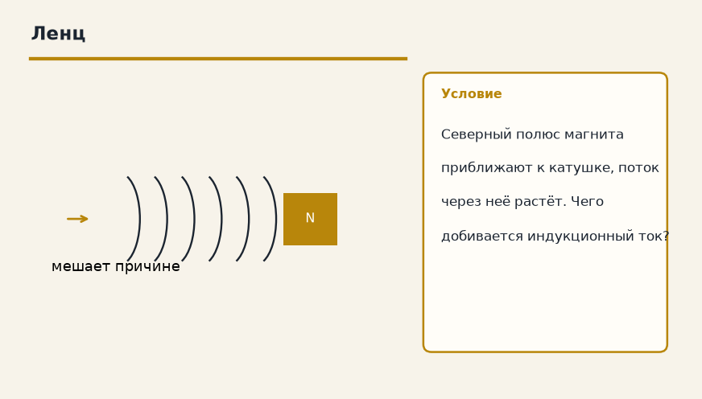

Найди, кто гонит заряд, и что ему мешает. Дальше — аккуратная арифметика, а не заклинание из букв. Ниже — как устроена тема «Закон электромагнитной индукции (Фарадея)», где обычно спотыкаются, и два разбора до ответа.

Показ к теме. Это условие, не шпаргалка.
Сначала смысл
При изменении магнитного потока через контур в нем возникает ЭДС индукции. То есть магнитное поле порождает электрический ток. Это основа всех генераторов.
Если магнитный поток через контур меняется, в контуре появляется ЭДС индукции. Поток можно менять, двигая магнит, меняя ток в соседней катушке или поворачивая рамку. На этом стоят генераторы: механическое движение превращается в электричество.
Формула ℰ = −ΔΦ/Δt. Модуль — насколько быстро меняется поток. Минус — правило Ленца: индукционный ток выбирает такое направление, чтобы его собственное поле мешало причине, которая его породила. Приближаешь магнит — ток отталкивает его, убираешь — ток пытается удержать.
Быстрее двигаешь магнит в катушке — больше ΔΦ/Δt — выше напряжение.
Как решать. Выпиши величины с рисунка к примеру «Поток за 0,2 с». Условие: Магнитный поток через контур изменился на 0,4 Вб за 0,2 с. Найди модуль ЭДС индукции. Дальше подставляй их в формулу этой темы и сверяй шаги с решением под картинкой — оно закрыто, пока не попробуешь сам. Второй рисунок, «Ленц», тот же приём на других данных: Северный полюс магнита приближают к катушке, поток через неё растёт. Чего добивается индукционный ток? Если оба примера сходятся, тему можно нести на контрольную.
Как читать формулу
ℰ = − ΔΦ / Δt
Знак «минус» — правило Ленца: индукционный ток направлен так, чтобы препятствовать изменению, его вызвавшему.
ℰ = −ΔΦ/Δt. Минус — правило Ленца.
Чтобы осталось в голове
Если двигать магнит внутри катушки, в ней появится ток. Чем быстрее двигать, тем больше напряжение.
Двигай магнит в катушке быстрее — напряжение индукции больше. Медленно почти ничего не набегает.
Где обычно спотыкаются
Постоянный поток ЭДС не даёт. Нужно изменение. И минус в формуле не декоративный: это Ленц, ток мешает изменению.
Дальше две задачи. Сначала схема. Когда сам набросаешь ход, открой тетрадь — там дано, перевод в СИ, шаги и ответ в рамке.
Разбор 1
Поток за 0,2 с
Магнитный поток через контур изменился на 0,4 Вб за 0,2 с. Найди модуль ЭДС индукции.
На схеме только условие. Ответа там нет — его ещё надо получить.
Смотри на порядок, не на красивое число: сначала единицы, потом формула, потом ответ.
Дано. Магнитный поток через контур изменился на 0,4 Вб за 0,2 с
В СИ.
Найти. Найди модуль ЭДС индукции.
Решение.
|ℰ| = ΔΦ/Δt = 0,4/0,2 = 2 В.
Знак скажет направление по правилу Ленца.

Разбор 2
Ленц
Северный полюс магнита приближают к катушке, поток через неё растёт. Чего добивается индукционный ток?

На схеме только условие. Ответа там нет — его ещё надо получить.
Смотри на порядок, не на красивое число: сначала единицы, потом формула, потом ответ.
Дано. Северный полюс магнита приближают к катушке, поток через неё растёт
В СИ.
Найти. Чего добивается индукционный ток?
Решение.
Он создаёт поле, которое мешает росту потока, то есть отталкивает приближающийся магнит.